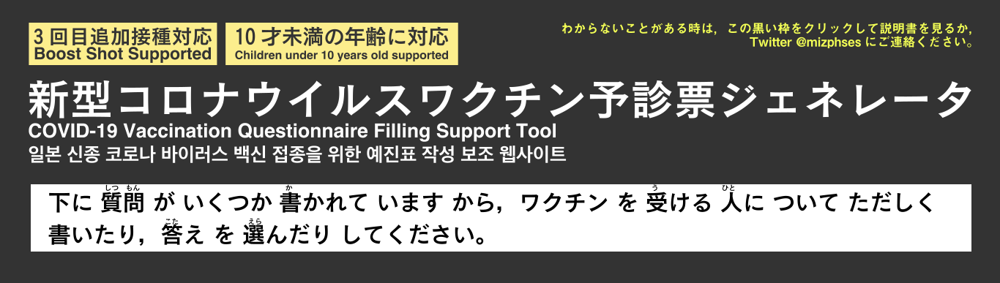

予診票ジェネレータ

住民票記載の住所
氏名（外国籍の場合は在留カード等の通り）
フリガナ
電話番号, ハイフン（-）区切りで
生年月日
性別
男
女
質問（1）
あなたは新型コロナウイルスのワクチンを初めて受けますか？
はい（今まで新型コロナウイルスのワクチンを受けたことはありません）
いいえ（1回以上受けたことがあります）
１回目はいつですか？
優先摂取を受けたなどで今日が3回目以上の方はスタッフに伝えてください．
質問（2）
現時点で住民票のある住所と，クーポン券記載の住所は同じですか？
はい（同じです）
いいえ（別の自治体です）
質問（3）
『新型コロナワクチンの説明書』を読んで、効果や副反応などについて理解しましたか？
はい（理解しました）
いいえ（理解できませんでした）
質問（4）
接種順位の上位となる対象グループ（早めにワクチンが打てるグループ）に該当しますか
これは，医療従事者，60歳以上，高齢者施設等の従事者，基礎疾患を有する者が該当します．
はい（あてはまります）
いいえ（あてはまりません）
次から当てはまるものを
全て
選んでください
医療従事者
65歳以上
64歳以上
高齢者施設等に従事する人
基礎疾患を有する者
基礎疾患の名称等
質問（5）
現在、何らかの病気にかかって、治療（投薬など）を受けていますか？
はい（あてはまります）
いいえ（あてはまりません）
次から当てはまるものを
全て
選んでください
心臓病
腎臓病
肝臓病
血液疾患
血液が止まりにくい病気
免疫不全
その他
血液をサラサラにする薬を使って治療中→下に名前を入力
その他投薬治療を受けている→下に名前を入力
質問（6）
最近１ヶ月以内に熱が出たり、病気にかかったりしましたか?
はい（熱が出たり，病気にかかったりしました）
いいえ（熱が出ていませんし，病気にかかっていません）
どんな病気ですか？
質問（7）
今日、体に具合が悪いところがありますか?
はい（具合が悪いところがあります）
いいえ（具合が悪いところはありません）
どんな症状ですか?
質問（8）
けいれん（ひきつけ）を起こしたことがありますか?
はい（けいれん・ひきつけを起こしたことがあります）
いいえ（けいれん・ひきつけを起こしたことはありません）
質問（9）
薬や食品などで、重いアレルギー症状（アナフィラキシーなど）を起こしたことがありますか?
はい（重いアレルギーが薬や食品で出たことがあります）
いいえ（重いアレルギー，アナフィラキシーが出たことはありません）
どんなもののアナフィラキシーですか?
質問（10）
これまでに予防接種を受けて具合が悪くなったことはありますか?
はい（ワクチン・予防接種で調子が悪くなったことがあります）
いいえ（重いアレルギー，アナフィラキシーが出ることはありません）
何の予防接種ですか?
どうなりましたか?
質問（11）
現在妊娠している可能性（生理が予定より遅れているなど）はありますか? または、授乳中ですか?
はい（妊娠している可能性がある，妊娠している，授乳中です）
いいえ（妊娠や授乳はしていません．）
質問（12）
２週間以内に予防接種を受けましたか?
はい（2週間以内に予防接種・ワクチンを受けました）
いいえ（ワクチンや予防接種を2週間以内に受けていません）
何の予防接種ですか?
いつですか?
質問（13）
今日の予防接種について質問がありますか?
はい（質問があります）
いいえ（質問はありません）
接種を希望します．ついては，以上の内容で問診票のPDFを作成します